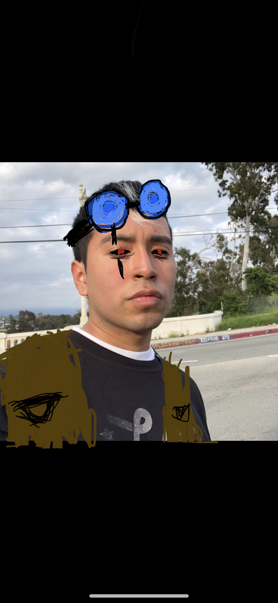

Enrik is an orphan n this new world. We see this world through his eyes and what he must do in order to surive. Humans are the lesser population so they face the worst of the worst but in Enrik's case, he also feels that he does not belong with the remaining human population since he is able to manipulate fire and has red eyes. Enrik's biggest dream is to escape the planet and travel space and see what is out there for him.
